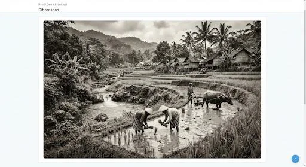
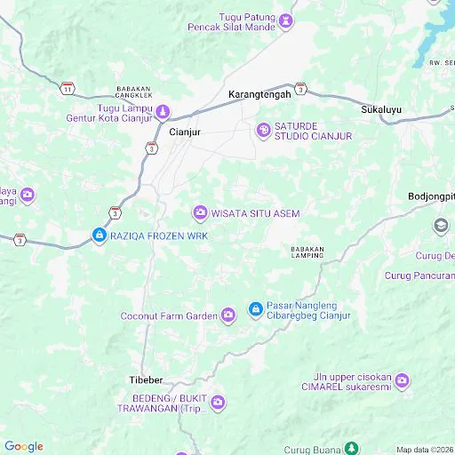

Awal Mula Pendirian
Desa Ciharashas tumbuh dari pemukiman agraris kecil yang bergantung pada mata air, lahan subur, dan kerja kolektif masyarakat.

Jelajahi sejarah panjang, kekayaan budaya, dan potensi geografis yang menjadikan Desa Ciharashas sebagai pilar komunitas yang kuat dan berkembang secara berkelanjutan.
Merajut tradisi, gotong royong, dan inovasi menuju masa depan yang cerah.
Desa Ciharashas tumbuh dari pemukiman agraris kecil yang bergantung pada mata air, lahan subur, dan kerja kolektif masyarakat.

Pembangunan jalan desa, fasilitas umum, balai desa, dan sekolah menjadi tonggak penting yang digerakkan oleh semangat gotong royong.
Teknologi mulai diintegrasikan dalam pelayanan desa. Program KKN turut memperkuat pemetaan potensi digital, literasi warga, dan UMKM lokal.
Sekilas data dan fakta mengenai penduduk serta kondisi geografis Desa Ciharashas.
Masyarakat heterogen dengan tingkat kerukunan yang tinggi dan didominasi usia produktif.
5.420 JiwaMencakup pemukiman, persawahan, perkebunan, dan kawasan konservasi hijau.
312 HaUdara sejuk yang mendukung sektor pertanian dan perkebunan.
22–28°CSumber daya alam dan kreativitas warga menjadi fondasi pengembangan ekonomi yang inklusif.
Tanah subur dan iklim sejuk mendukung komoditas hortikultura, kopi, dan produk pangan bernilai tambah.
♧Produk olahan lokal, kerajinan, dan jasa kreatif berpeluang menjangkau pasar lebih luas melalui digitalisasi.
▥Lanskap hijau, tradisi lokal, dan aktivitas pertanian dapat dikembangkan menjadi pengalaman wisata berbasis komunitas.
⌖Desa dapat dijangkau dari pusat Kabupaten Cianjur dengan tetap mempertahankan suasana pedesaan yang asri.
Buka di Google Maps →
● Pusat DesaTemukan program kerja, tim pelaksana, dokumentasi, sponsor, dan kanal kontak resmi.